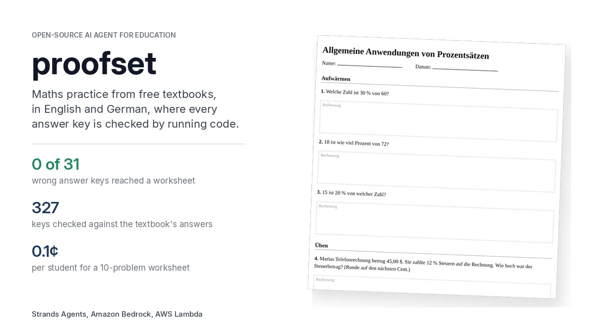
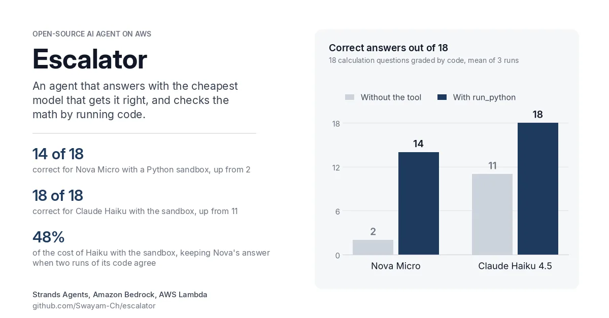
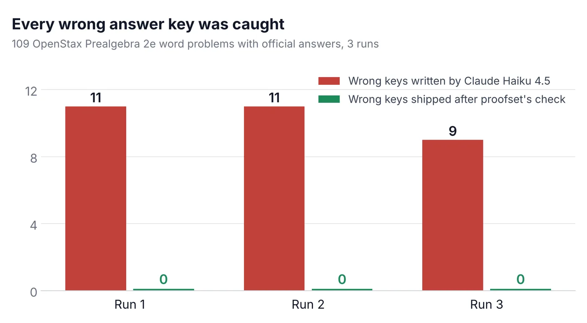
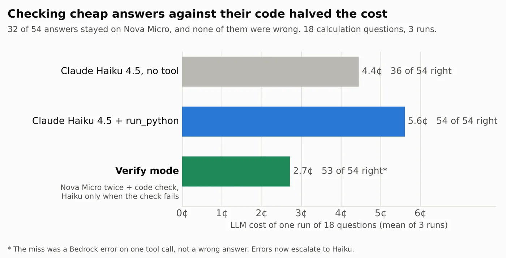

AI agents
Strands Agents SDK: tools, structured output, hooks, agents working in parallel. Models on Amazon Bedrock (Claude Haiku 4.5, Amazon Nova Micro).
Used in proofsetM.Sc. Computer Science, LMU Munich · AI agents and RAG
Language models write confident answers, and some of them are wrong. My projects make the model run code to prove a number before anyone relies on it, and I measure every claim against real answers.
Psst: there's a game on this page. The AI gets some maths wrong, and you get to catch it.
Hi, I'm Swayam. I'm in the first semester of an M.Sc. in Computer Science at LMU Munich, moving to TUM in March 2027, after a B.Sc. in Computer Science and Business Administration at LMU. I build AI agents and RAG systems as a working student at synvert.
I like finding out whether an idea actually works, which is why I keep ending up at hackathons. My first AWS one asked for an agent that decides when it needs a bigger model. I built it, measured it, and found it confidently sending wrong maths answers. Every project since has been about the same question: how do you know an AI's answer is right?
My answer so far is to run the code instead of asking another model to judge. That idea took me from a router that saves money, to a Python sandbox on AWS Lambda, to proofset, which writes school practice sets and won't ship an answer key unless two runs of code agree with it.
In my free time I'm building rag-vs-agent-bench, an open-source benchmark comparing agentic search with vector RAG. Outside of code I'm training for an Ironman 70.3 in August 2027.
M.Sc. Computer Science, LMU Munich (TUM from March 2027)
Working student, AI agents and RAG, synvert
Munich, Germany
German (C2), English (C2), Hindi (native), French (B1)
Ironman 70.3, August 2027
Each one links to where I used it, so you don't have to take my word for it.
Strands Agents SDK: tools, structured output, hooks, agents working in parallel. Models on Amazon Bedrock (Claude Haiku 4.5, Amazon Nova Micro).
Used in proofsetAnswers verified by running code, two independent solvers, a tie-breaker from another model family, and plain-Python checks where a model would guess.
Used in Escalator's verify modeBenchmarks against real answers, repeated runs with ranges, and write-ups that report what failed. My benchmarks found bugs in my own code, and I kept those in the results.
See the resultsAmazon Bedrock, AWS Lambda (a sandbox with a logs-only IAM role), IAM, CloudWatch Logs, and AWS Amplify Hosting for this site.
Lambda sandbox codeAgents, benchmarks, data parsing (OpenStax CNXML and MathML), pytest suites that run without AWS, and charts with matplotlib.
The testsVector RAG and agentic search, built at work and compared head to head in my open-source benchmark. Large-scale LLM pipelines, such as 2.23 million patents for my bachelor's thesis.
rag-vs-agent-bench on GitHub
Education · Strands SDK: Workshop to Ship
Turns a chapter of a free OpenStax textbook into maths practice in English and German: printable worksheets and a tutor students can talk to. An author agent writes the problems, two solver agents work each one out in an AWS Lambda sandbox, and a key ships only if two code runs agree with it.

Strands Decider hackathon · Weekend Challenge: Give your Agent a Tool
A 2B decision model routes each question to a cheap or an expensive model. I then gave the agent one tool, a Python sandbox on AWS Lambda, and later a verify mode that keeps the cheap model's answer only when two runs of its code agree.
Open source
A benchmark comparing agentic search with vector RAG: when does letting an agent search beat retrieving chunks from a vector index?
Code on GitHubRoboTUM, with ITQ
AI robots that collect plastic waste. I'm the Technical Lead.
Bachelor's thesis, LMU Munich
An LLM pipeline that processes 2.23 million USPTO patents.


20+ AI and cloud certifications, including AWS Certified Generative AI Developer – Professional, Claude Certified Architect – Professional, and Microsoft Certified: Agentic AI Business Solutions Architect.
Technical Lead, PlastiX: AI robots that collect plastic waste, with ITQ.
B.Sc. thesis, LMU Munich: an LLM pipeline over 2.23 million USPTO patents.
proofset submitted to Strands SDK: Workshop to Ship (Education).
Escalator + run_python submitted to Weekend Challenge: Give your Agent a Tool.
Escalator submitted to the Strands Decider 2B hackathon, with a Builder Center article.
Happy to talk about AI agents, RAG and how to test whether they work. LinkedIn is the best way to reach me.